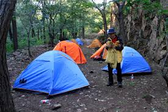
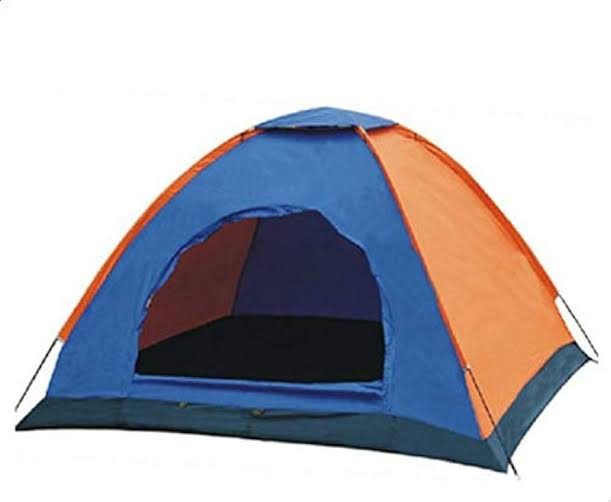

؟ hiking ما هي خيمة
خيمة التسلق (أو خيمة الرحلات) هي نوع من الخيام الخفيفة والمحمولة، مصممة خصيصًا لتكون سهلة الحمل والتركيب خلال الرحلات والمغامرات في الطبيعة. تُستخدم هذه الخيمة من قبل المتسلقين، الرحالة، والمخيمين لتوفير مأوى مريح وخفيف الوزن.
---------------------
؟ hiking كيف تنصب خيمة
اختيار المكان المناسب: ابحث عن مكان مستوٍ خالٍ من الصخور والأغصان.
فرش الأرضية: افرد غطاء الأرضية (أو بطانة الخيمة) لحماية الخيمة من الرطوبة والأوساخ.
تجميع الأعمدة: قم بتجميع الأعمدة المرنة (عادةً من الألياف الزجاجية أو الألومنيوم) وأدخلها في الأكمام أو الحلقات الموجودة في جسم الخيمة.
رفع الخيمة: ارفع الخيمة بتثبيت الأعمدة في زواياها، ثم ثبت الزوايا باستخدام الأوتاد والأحبال.
تثبيت الغطاء العلوي: إذا كانت الخيمة تحتوي على غطاء علوي مقاوم للماء، فقم بتثبيته فوق الخيمة للحماية من المطر.
فرش الأرضية: افرد غطاء الأرضية (أو بطانة الخيمة) لحماية الخيمة من الرطوبة والأوساخ.
تجميع الأعمدة: قم بتجميع الأعمدة المرنة (عادةً من الألياف الزجاجية أو الألومنيوم) وأدخلها في الأكمام أو الحلقات الموجودة في جسم الخيمة.
رفع الخيمة: ارفع الخيمة بتثبيت الأعمدة في زواياها، ثم ثبت الزوايا باستخدام الأوتاد والأحبال.
تثبيت الغطاء العلوي: إذا كانت الخيمة تحتوي على غطاء علوي مقاوم للماء، فقم بتثبيته فوق الخيمة للحماية من المطر.
---------------------
؟ hiking مميزات خيمة
خفيفة الوزن: مصممة لتكون خفيفة الوزن وسهلة الحمل، مما يجعلها مثالية للرحلات الطويلة.
سهولة التركيب: يمكن تركيبها وتفكيكها بسهولة وسرعة، حتى من قبل شخص واحد.
مقاومة للعوامل الجوية: توفر حماية جيدة من المطر والرياح بفضل موادها المقاومة للماء.
سهولة التركيب: يمكن تركيبها وتفكيكها بسهولة وسرعة، حتى من قبل شخص واحد.
مقاومة للعوامل الجوية: توفر حماية جيدة من المطر والرياح بفضل موادها المقاومة للماء.
---------------------
؟ hiking عيوب خيمة
المساحة الداخلية: قد تكون صغيرة نسبيًا، مما يعني أن المساحة الداخلية محدودة.
التهوية: في بعض الأحيان، قد تكون التهوية غير كافية، مما يمكن أن يؤدي إلى تراكم الرطوبة داخل الخيمة.
التحمل: قد تكون أقل متانة مقارنةً بالخيام الثقيلة المصممة للاستخدام في البيئات القاسية.
التهوية: في بعض الأحيان، قد تكون التهوية غير كافية، مما يمكن أن يؤدي إلى تراكم الرطوبة داخل الخيمة.
التحمل: قد تكون أقل متانة مقارنةً بالخيام الثقيلة المصممة للاستخدام في البيئات القاسية.
---------------------
ملاحظات إضافية
اختيار الخيمة المناسبة: عند شراء خيمة التسلق، من المهم اختيار الحجم المناسب والمواد التي تتناسب مع طبيعة الرحلات التي تخطط لها.
الصيانة: حافظ على نظافة الخيمة وتأكد من تجفيفها جيدًا بعد الاستخدام لتجنب العفن والرائحة الكريهة.
التدريب: من الجيد أن تتدرب على نصب الخيمة في المنزل قبل الذهاب في رحلة حقيقية، لتكون واثقًا من قدرتك على نصبها بسرعة وكفاءة في الطبيعة.
الصيانة: حافظ على نظافة الخيمة وتأكد من تجفيفها جيدًا بعد الاستخدام لتجنب العفن والرائحة الكريهة.
التدريب: من الجيد أن تتدرب على نصب الخيمة في المنزل قبل الذهاب في رحلة حقيقية، لتكون واثقًا من قدرتك على نصبها بسرعة وكفاءة في الطبيعة.
---------------------

